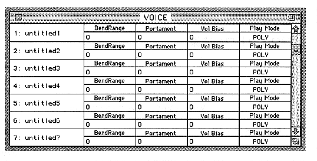
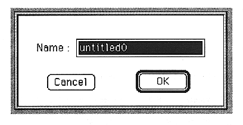

Tone name
The leftmost column displays the name of the sound. Double-click the displayed name to open the rename dialog box. You can change the name on the window.

BendRange
Set the variable range of the bend range.
You can set a value between 0 and 13. This number is a MIDI note that shows the pitch change when the pitch bend wheel is moved to its maximum.
Portament
Sets the portamento time.
You can set a value between 0 and 127.